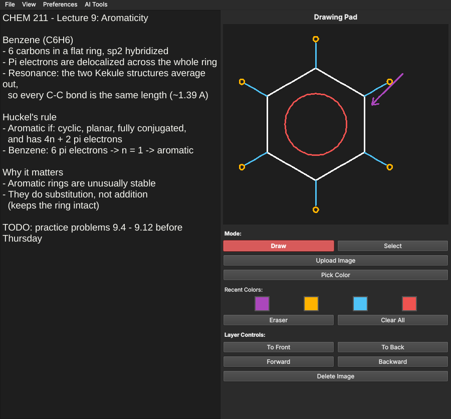
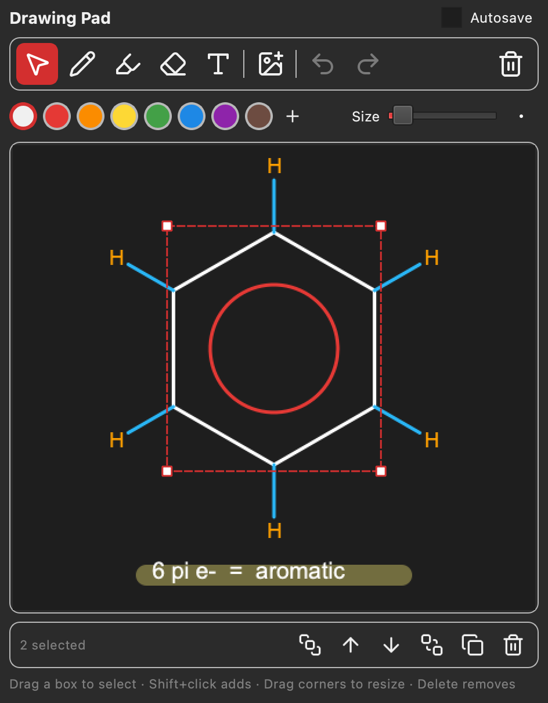
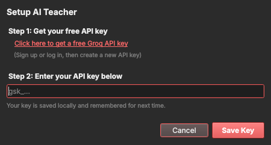

free & open source
SharkPad
Notes, drawing, and voice dictation in one window. Type, sketch, and catch what the professor just said, all at once.
download for Windows
Version 1.2.0 · all releases
v1.2.0
works offline
what it does
write
Autocorrect, spell check, find and replace, and autosave so you never lose a note.
draw
Pen, highlighter, text, and images. Select anything to move, resize, or recolor it later.
listen
Voice dictation types as you talk. It runs on your computer, so it works offline.
understand
The AI Teacher explains your notes in plain language with one click.
see it in action



first time opening it?
- Windows: unzip it and run SharkPad.exe
- Mac: unzip it, then right-click SharkPad and choose Open
- Linux: mark the AppImage as executable, then run it
free forever
SharkPad is open source under the MIT License. Read the code, report a bug, or build it yourself.
view on github